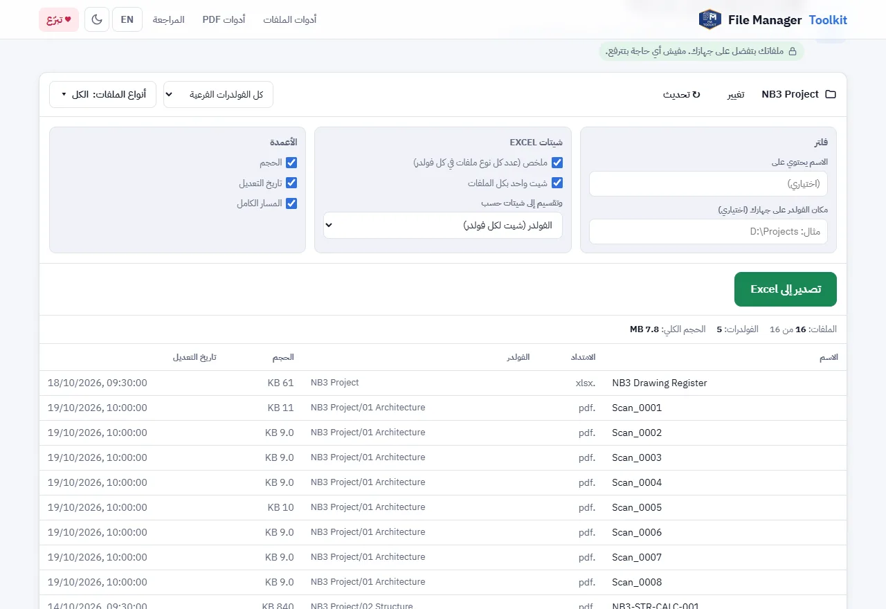

نموذج Document Transmittal على Excel مجاناً
نموذج Transmittal مرتب على Excel: بيانات الإرسال، والغرض من الإصدار، وقائمة مستندات مرقمة، وخانات التوقيع. نزّله مجاناً، واملأ قائمة المستندات من الفولدر بدل كتابتها.
الإجابة باختصار
نزّل النموذج، واملأ بيانات الإرسال، واكتب المستندات التي سترسلها. ولتوفير الكتابة، افتح أداة الملفات إلى Excel، واختر فولدر الإصدار، وانسخ أسماء الملفات في عمود Document No. ولو كانت لوحات PDF، فأداة PDF إلى Excel تقرأ الرقم والعنوان والـ Revision من جدول العنوان.
ماذا يوجد في النموذج
- رقم الـ Transmittal والتاريخ والمشروع ورقمه والمرسل والمستلم والموجه إليه وطريقة الإرسال (إيميل أو CDE أو نسخة ورقية).
- الغرض من الإصدار: للعلم، للتعليق، للاعتماد، للمناقصة، للتنفيذ أو As built.
- قائمة مستندات بترقيم تلقائي: رقم المستند والعنوان والـ Revision والحالة والصيغة وعدد النسخ والملاحظات.
- عدد المستندات في القائمة، وخانات توقيع للمرسل والمستلم.
- يناسب ورقة A4 بالطول، جاهز للطباعة أو الحفظ كـ PDF.
ما فائدة الـ Transmittal
الـ Transmittal هو غلاف الإصدار. يسجل بالضبط أي المستندات، وبأي Revision، أُرسلت لمن، وفي أي تاريخ، ولماذا. وعندما يحدث خلاف بعد شهور حول أي Revision كان مع المقاول، يكون الـ Transmittal هو الدليل. لذلك يجب أن تطابق القائمة الملفات المرسلة فعلاً، ملفاً بملف.
خطوة بخطوة
نزّل النموذج
اضغط تنزيل النموذج وافتحه على Excel أو LibreOffice أو Google Sheets. املأ البيانات: رقم الـ Transmittal والتاريخ والمشروع والمستلم.
ضع ملفات الإصدار في فولدر واحد
انسخ الملفات التي سترسلها بالضبط في فولدر واحد، حتى لا يختلف الـ Transmittal عن الملفات أبداً.
اعرض الفولدر في Excel
افتح أداة الملفات إلى Excel واختر هذا الفولدر. تعرض كل ملف باسمه ونوعه وحجمه. نزّل ملف الـ Excel والصق الأسماء في عمود Document No.
أضف العناوين والـ Revisions
للوحات الـ PDF، أداة PDF إلى Excel تقرأ العنوان والـ Revision من جدول العنوان، فتلصق هذه الأعمدة أيضاً بدل كتابتها.
حدد الغرض وأرسل
حدد الغرض من الإصدار، وتأكد أن عدد المستندات يساوي عدد الملفات، ثم احفظ الـ Transmittal كـ PDF وأرسله مع الملفات.

نصائح
- رقّم الـ Transmittals بتسلسل واحد لكل مشروع (TR-001 و TR-002) ولا تكرر رقماً أبداً.
- شغّل الـ Pre-flight Check على الفولدر قبل الإرسال: يكشف الأرقام المكررة واللوحات الناقصة والـ Revisions غير المطابقة لقائمة اللوحات.
- لو تعمل حسب ISO 19650، راجع أسماء الملفات على قاعدة التسمية بأداة MIDP Check قبل أن تخرج من المكتب.
- احتفظ بنسخة من كل Transmittal مع الملفات كما أُرسلت بالضبط، في فولدر باسم رقم الـ Transmittal.
املأ القائمة من الفولدر
مجاني، يعمل داخل متصفحك، وملفاتك لا تخرج من جهازك أبداً.
افتح أداة قائمة الملفات إلى Excel ←أسئلة شائعة
هل نموذج الـ Transmittal مجاني؟
نعم. نزّله واستخدمه في أي مشروع بدون تسجيل. هو ملف .xlsx عادي بدون ماكرو.
هل يمكن استخدامه على Google Sheets؟
نعم. ارفعه على Google Drive وافتحه بـ Google Sheets. الترقيم التلقائي وعدد المستندات يظلان يعملان.
كيف أنقل أسماء الملفات إلى Excel بسرعة؟
افتح أداة الملفات إلى Excel واختر الفولدر. تعرض كل الملفات، ومعها المجلدات الفرعية لو أردت، وتنزلها كملف Excel. بدون Command Prompt أو VBA أو Power Query.
ماذا يجب أن يحتوي الـ Document Transmittal؟
رقم الـ Transmittal وتاريخه، والمرسل والمستلم، والغرض من الإصدار، ولكل مستند رقمه وعنوانه والـ Revision والحالة، بالإضافة إلى توقيع أو إقرار بالاستلام.
هل تُرفع ملفاتي عند عرضها؟
لا. المتصفح يقرأ الفولدر على جهازك ولا يُرسل أي شيء إلى سيرفر.